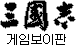
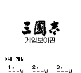
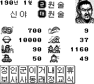
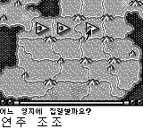
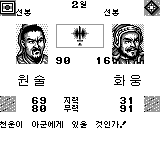
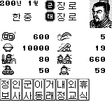

GAME BOY 한글패치

천하가 어지러운 삼국 시대. 군주가 되어 중원 통일을 이루어 보세요. 게임보이판 「삼국지」를 이제 한국어로 즐길 수 있습니다.




패치 기능
명령 메뉴부터 인물 이름, 대사, 전투까지 게임 전체를 한국어로 옮겼습니다. 인명·지명·용어는 표준 용어표 하나로 맞췄습니다.
- 인물200명
- 지명19곳
- 메뉴36종
- 대사·문구456개
명령 메뉴
정보·인사·군사·이동·거래·내정·외교·휴식과 하위 명령까지, 그림으로 된 메뉴 36종을 한글로 다시 그렸습니다.
인물 200명
무장 198명과 특수 인물 2명의 이름, 이름 읽기를 한국어로 바꿨습니다.
지명 19곳
연주·사주·한중 등 지도와 정보 화면에 나오는 지역 이름을 모두 옮겼습니다.
대사·안내
지도 선택 안내, 대화와 사건, 거래와 전쟁 결과까지 화면에 나오는 문구를 한국어로 옮겼습니다.
전투
일반·간략 전투 방식과 공격·계략·퇴각 명령, 전투 메시지를 한글로 표시합니다.
도트 글꼴
게임보이 화면에 맞춘 갈무리 픽셀 글꼴을 썼습니다. 三國志 타이틀 그림과 신분 표시의 둥근 테두리는 원래 모양을 살렸습니다.
시나리오
두 시대 가운데 하나를 골라 천하 통일에 나섭니다.
-
1. 동탁의 횡포190년
낙양을 장악한 동탁이 황제를 앞세워 폭정을 일삼자, 각지의 군웅이 들고일어납니다.
-

2. 유비의 자복200년
조조와 원소가 중원을 두고 맞서는 가운데, 유비는 몸을 낮추고 때를 기다립니다.
스크린샷
사진을 누르면 크게 볼 수 있습니다.
시나리오두 시대 중 하나를 골라 시작 무장 정보나이·체력·지력·무력·매력 인사수색·등용·포상·임명 방침부국·강병·집결·전쟁·위임 거래현재 시세는 94입니다 전쟁어느 영지를 공격할까요? 간략 전투공격·계략·퇴각 일반 전투지형 위에서 부대를 움직여 싸웁니다 후계태자를 정해 대를 잇습니다
패치 방법
원본 ROM에 xdelta 패치를 적용하면 한글판 ROM이 만들어집니다.
원본 준비
직접 덤프한 일본판 원본 ROM을 준비하고, 아래 해시 정보와 같은지 확인합니다.
패치 받기
다운로드 페이지에서 zip을 받아 압축을 풉니다. .xdelta 패치 파일과 해시 목록이 들어 있습니다.
패치 적용
Delta Patcher 같은 xdelta 패치 도구로 원본 ROM에 패치를 적용하면 한글판 ROM이 만들어집니다.
- 게임 데이터는 들어 있지 않습니다. 직접 가지고 있는 정품 게임에서 덤프한 ROM이 필요합니다.
- 패치한 ROM은 524,288 bytes로 원본의 두 배 크기가 됩니다. 결과 ROM의 해시는 zip 안의 해시 목록으로 확인할 수 있습니다.
- 원본 게임에서 만든 세이브 파일도 불러올 수 있습니다. 그래도 패치 전에 세이브를 백업해 두세요.
해시 정보
패치에 필요한 원본 ROM입니다. 덤프한 파일과 값이 같은지 확인하세요.
- 파일
- Sangokushi - Game Boy Ban (Japan).gb
- 크기
- 262,144 bytes
- SHA-256
- A9B8C50C84B6F33EC29025A76420D5AD098D6B1B99EA9798976D758755F73256
- SHA-1
- E94128D58341CAAEE595ED75292908A9AC5A466D
- MD5
- 85082BCBDA4FEBF4E9E05FA0679940B4
- CRC32
- 83706E92
버전별 패치 파일과 결과 ROM의 해시는 다운로드 페이지의 해시 목록을 확인하세요.